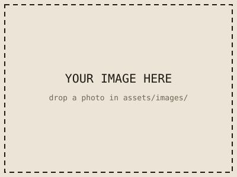

Subject 05 · Technology
Technology
Tech is where I stopped being just a user and started being a builder — turning ideas into real, working projects.
Evidence & Documentation
Work that shows my thinking
Photos and scans of assignments, projects, and graded work. Replace the placeholder images in assets/images/ with your own.

Files & Documents
Download the full work
Drop your PDFs, slides, spreadsheets, or docs into assets/files/ and link them here.
Reflection
How this prepared me
The most important part of the portfolio: what you learned and why it matters for your future.
How building things prepared me for the future
Technology class taught me that I don't have to wait for someone else to build the thing I want — I can learn the tools and make it myself. Debugging taught me patience and systematic problem-solving.
This is the most directly career ready work in my portfolio. I can plan a project, work through failures, document my process, and ship something that actually works.
Understanding how technology is built makes me a more responsible global citizen — I think about privacy, accessibility, and the impact of the tools I create and use.
College Ready
Project planning and technical skills.
Career Ready
Building, debugging, and shipping.
Global Citizen
Ethical, responsible technology use.